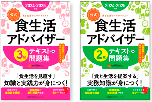
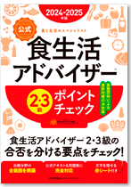
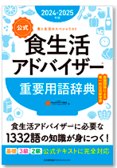
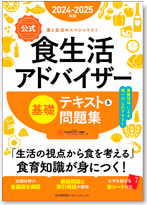
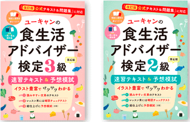
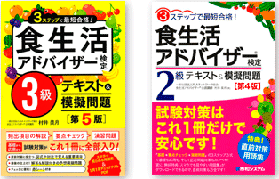
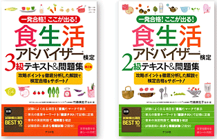

書籍紹介
公式テキストをはじめ、
ユーキャンや公認講師によるテキストがラインナップ！！
書店にてお求めいただけます。
- 2024-2025年版【公式】食生活アドバイザー®テキスト＆問題集
-

一般社団法人ＦＬＡネットワーク®協会 編
[ 日本能率協会マネジメントセンター]
3 級：定価 1,980 円（税込）
2 級：定価 2,310 円（税込）◆ 合格講座指定教材 ◆
合格講座をお申込の方は受講する級のテキストを必ず事前に書店にてお買い求めの上、合格講座にご持参ください。
講座当日の販売はいたしません。
- 2024-2025年版【公式】食生活アドバイザー®2・3級 ポイントチェック
-

一般社団法人ＦＬＡネットワーク®協会 編
[ 日本能率協会マネジメントセンター]
定価 1,980 円（税込）・食生活アドバイザー® 公式テキスト＆問題集（2級・3級）から、特に出題率の高い重要ポイントや頻出事項をまとめた直前対策本です。
・移動中やスキマ時間、直前期の総まとめや、試験会場でのおさらいとして活用できます。
・付属の赤シートでポイントを隠しながら学習できるので、効果的に得点アップにつながります。
- 2024-2025年版【公式】食生活アドバイザー®重要用語辞典
-

一般社団法人ＦＬＡネットワーク®協会 編
[ 日本能率協会マネジメントセンター]
定価 2,200 円（税込）全コース（基礎・３級・２級）の『公式テキスト』から検定に出題される用語を抽出し、横断的にまとめた用語集です。
受験者が効率よく学習できるよう、『公式テキスト』の参照ページと試験問題での出題頻度を示しました。
また、受験対策だけでなく、食生活アドバイザー® として活躍するなかでの参考書としても活用できます。
- 2024-2025年版【公式】食生活アドバイザー®基礎 テキスト＆問題集
-

一般社団法人ＦＬＡネットワーク®協会 編
[ 日本能率協会マネジメントセンター]
定価 1,650 円（税込）
- ユーキャンの食生活アドバイザー®検定 速習テキスト＆予想模試
-

ユーキャン著[ 自由国民社]
3 級：定価 1,650 円（税込）
2 級：定価 1,870 円（税込）
- 食生活アドバイザー®検定テキスト＆模擬問題
-

食生活アドバイザー®
公認講師・村井美月著[ 秀和システム]
3 級：定価 1,650 円（税込）
2 級：定価 1,980 円（税込）
- 食生活アドバイザー®検定テキスト＆問題集
-

食生活アドバイザー®
公認講師・竹森美佐子監修・著[ ナツメ社]
3 級：定価 1,650 円（税込）
2 級：定価 1,870 円（税込）